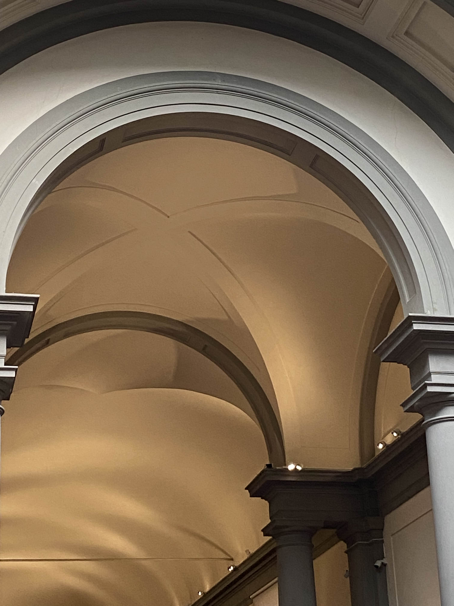
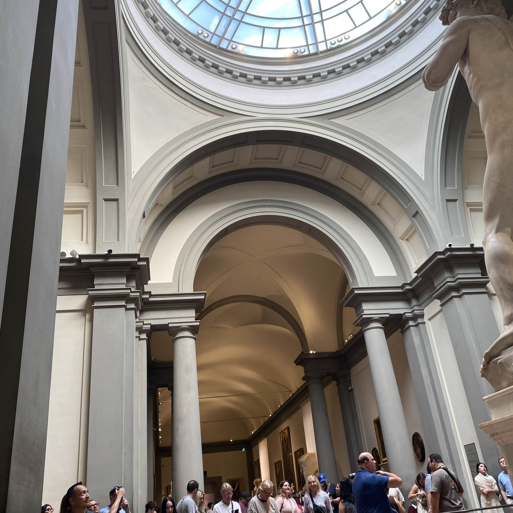
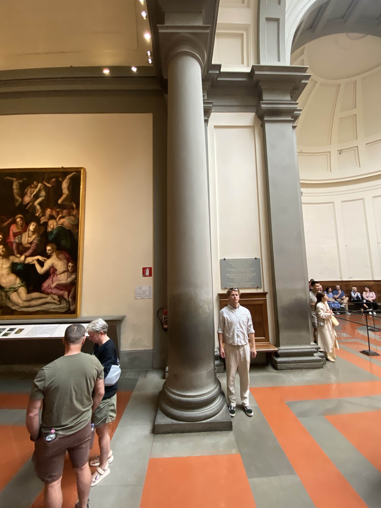
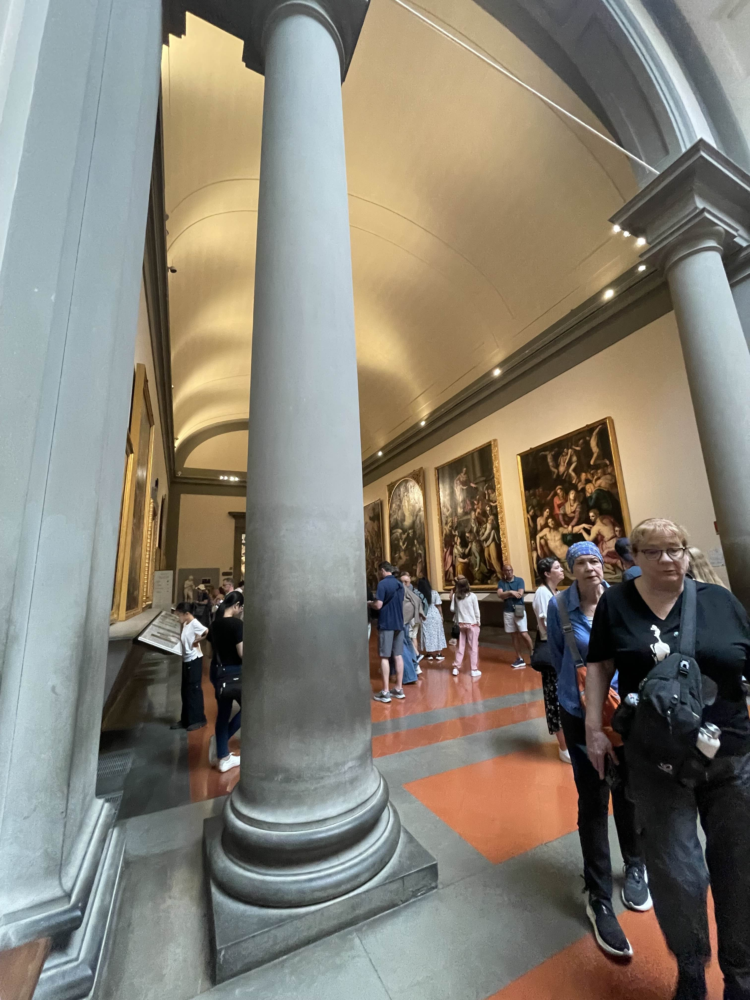
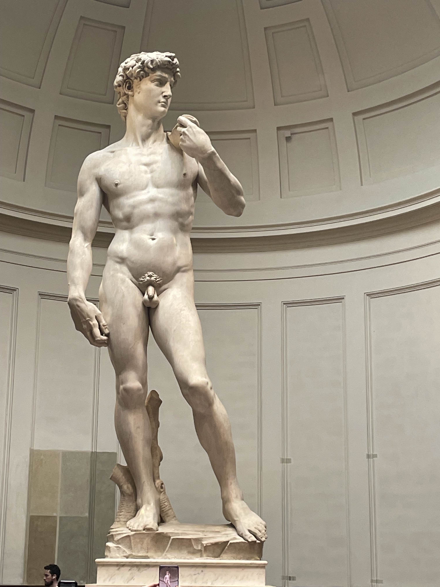
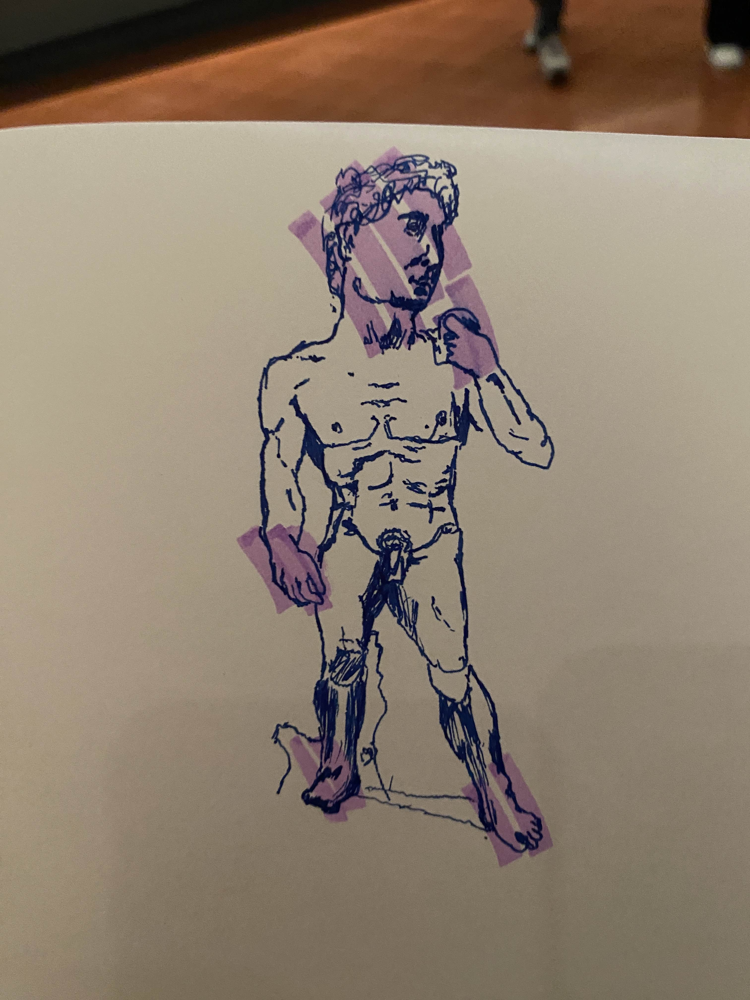

TitelTilbage til forsiden
Galleriets søjler er omtrent én bredde fra væggene i en perfekt firkant. Vi kan se dette fordi loftet har et kors fra en diagonal af hver søjle der mødes i midten.


Individuelt er de runde og har en mindre diameter jo højere op vi kigger for at skabe en illusion af mere højde end hvad der faktisk står. De har små ringe nær enderne og de bliver til en større kvadratisk plade på toppen. De er cirka 4 meter fra hinanden og cirka 5 meter høje.


Statuen blev skabt af Michelangelo, kaldet David.
Den afbilder en mand der står
oprejst med fokus placeret på hoved, hænder og fødder, hvor de er mærkbart
større end hvad der ville være anatomisk korrekt.

